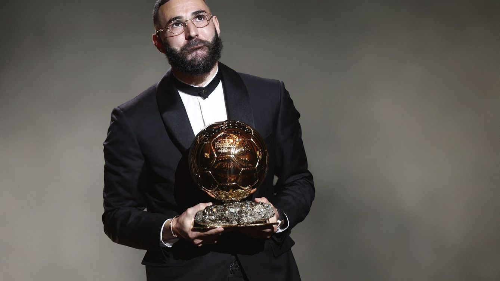

Benzema y Lewandowski: del reloj más complicado del mundo al Casio de 60 euros en la gala del Balón de Oro
Los delanteros de Real Madrid y Barcelona portaron relojes muy distintos el lunes en París
El pasado lunes, Karim Benzema fue el gran protagonista en la Gala del Balón de Oro en París que supuso el primer galardón individual que recibe el jugador francés del Real Madrid. En dicho acto, además, otros futbolistas como Robert Lewandowski, delantero del FC Barcelona, también fue galardonado con el Trofeo Müller como máximo goleador del curso entre club y selección. Muchas fueron las imágenes, anécdotas y curiosidades de una gala por todo lo alto a la que acudieron la mayoría de las personalidades más relevantes del panorama futbolístico actual. Y como todo en este deporte tiene relevancia, muchos medios se han hecho eco de los relojes que portaban nuestros dos protagonistas.

Lo que no se vio en la Gala del Balón de Oro Real Madrid